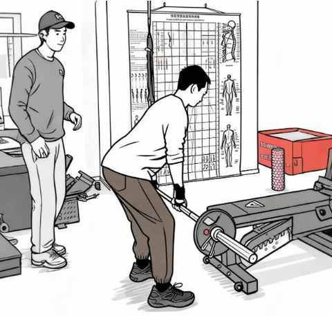
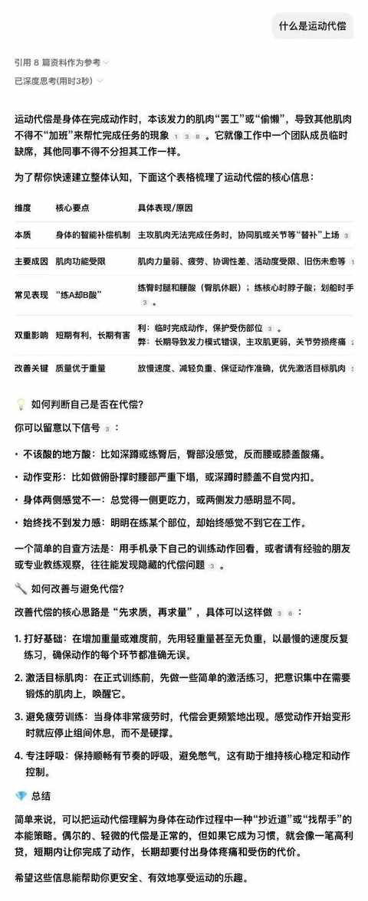
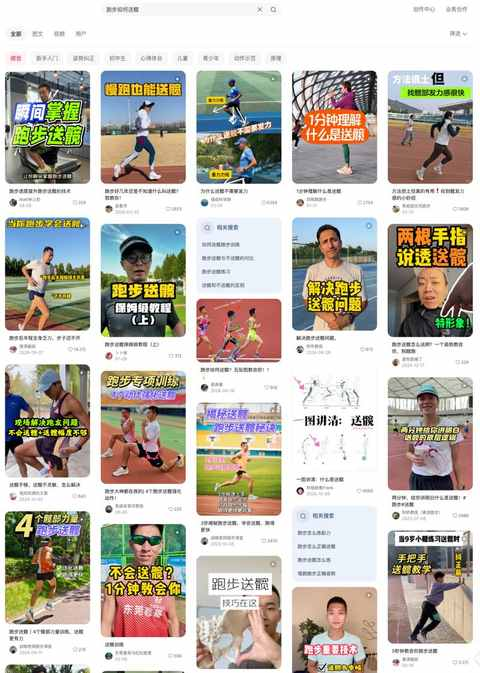

持续运动最大的感受：承认吧，谁还能没有约束条件！
一、上私教课的发现
上私教课的时候，在我身上会出现一个典型的场景，一般是这样的：
① 教练演示了一组动作，我在旁边观看
② 教练演示完，轮到我重复刚才的动作，发现无法复刻
③ 不仅仅是动作无法复刻，教练想练到的肌肉也没有感觉
④ 教练让我再做几个动作，根据现场反馈，当场重新编新的训练动作

不练的话，是完全不知道，这个动作完成不了，那个动作也完成的不对。
那么为什么在日常生活和运动中并没有发现这些问题呢，这就不得不感叹人体的奇妙和精细化运作。
身体有智能补偿机制， 是人体在面临压力、挑战或部分功能受限时，为了维持生存和基本功能，由神经系统和生理系统自动启动的一系列非常精妙的“备选方案”和“应急策略”。
在运动的过程中，因为每个人身体条件的不同，不可避免的会出现运动代偿的情况，其本质就是身体的智能补偿机制在发挥着作用。

在不断练习的过程中，逐渐能发现以往的发力方式和模式是不对的，有些是身体的补偿机制导致的，有些是先天条件限制。
了解到这些之后，瞬间想起来有一次和小伙伴们去河里游泳的事情：他们几个都去到了激流的另一边，但是这个激流我怎么也过不去，现在回过头来想最大的原因是核心不稳，被水流冲击后脚无法踩住河底以至于屡试屡败。
二、说好的跑步送髋呢
刚开始跑步的时候，看过很多自媒体的内容，其中被提到的最多的一个关键词是“送髋”，看了多位博主的演示和讲解之后，对 “送髋”有了很多的了解。

在已经很了解的情况下，就现在我都跑了 2800km，还是没找到送髋的感觉！
越跑越能深切感知到：每个人都有特定的约束条件，但有约束条件并不代表不能进行相关运动。
三、谁都有 约束条件
现实情况是：约束条件每个人都有，满级人类实属凤毛麟角。
有些条件是先天的且无法改变，有些是后天的能去改善。持续运动的好处是：能更了解自己的身体，能知晓优势和劣势。
教练给到的解决方案是：
- 大部分都是我能完成的动作
- 少部分动作的是暂时完成起来有挑战的类型
- 加入跑步相关的力量训练，偏平衡性与后侧链
关于跑步我的调整策略是：
- 坚持跑，过程中注意动作的协调性
- 跑前练核心，增加跑的过程中对核心的感知能力
- 逐步增加跑量，继续找送髋的感觉
所有的这些措施，都可以用一句话总结：
秉持着积极的心态，接受不能改变的，去改 变 能改变的！